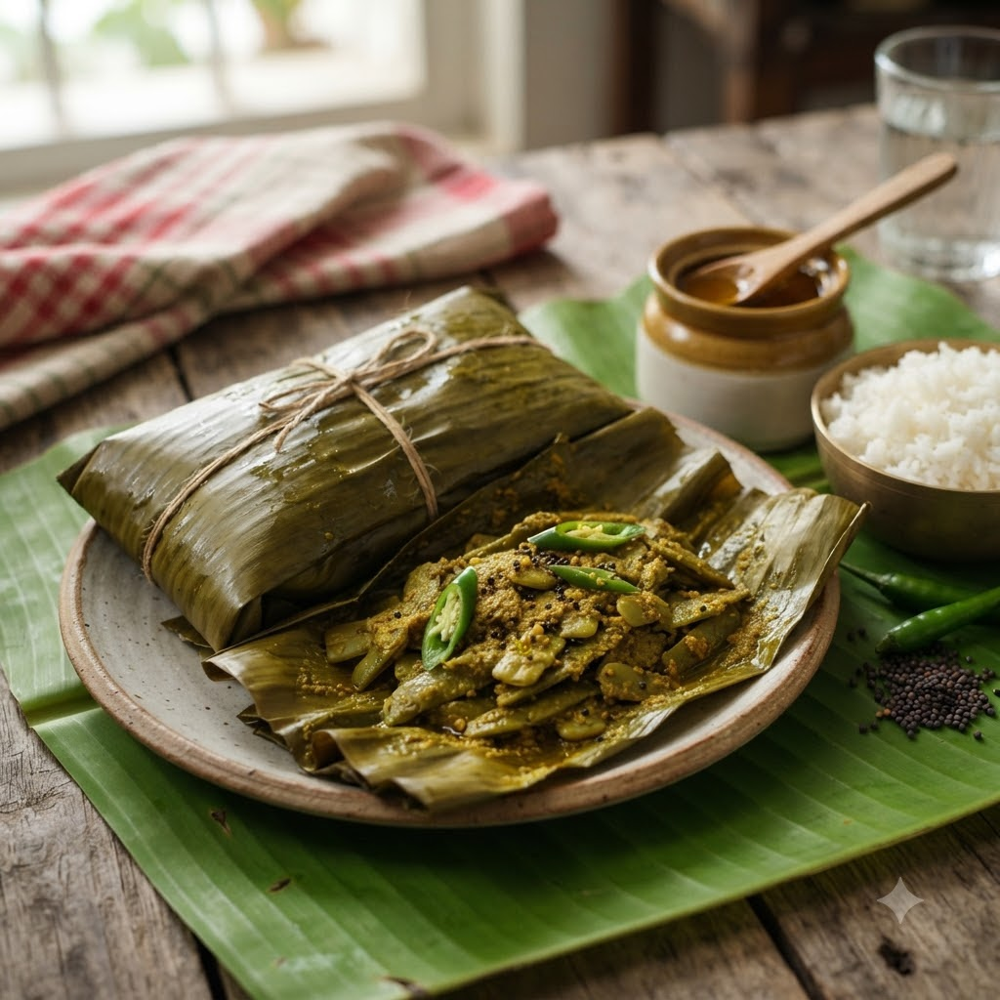

Sheem er Paturi (Flat Beans Steamed in Mustard)

Sheem er Paturi (Flat Beans Steamed in Mustard)
Chef Magic – Steam Auto Prep 15 min + Steam 18 min — Serves 4
Gluten-Free • Vegan • Bengali
Prep ahead: Soak mustard seeds in warm water for 20 minutes before grinding, with a green chilli, for a smoother, less bitter
Ingredients
- 300g sheem (flat/hyacinth beans), thinly sliced
- 2 tbsp mustard seeds (rai), soaked and ground to a paste
- 2 tbsp grated coconut
- 2 green chillies (hari mirch), slit (plus 1 for the paste)
- 3 tbsp mustard oil (sarson ka tel)
- 1/2 tsp turmeric (haldi)
- Salt & sugar to taste
- Banana leaf or foil, to wrap
Method
1Toss the sliced sheem with the mustard-coconut paste, turmeric, mustard oil, a pinch of sugar and salt until well coated.
2Spoon the mixture onto a piece of banana leaf or foil, top with slit green chillies, and fold into a sealed parcel.
3Add water to Chef Magic’s jar and fit the steamer tray; place the parcel on top.
4Select Steam (100°C steam, paddle off) and cook for 18 minutes until the sheem is tender and the parcel is fragrant.
5Rest for 2 minutes, then unwrap and serve hot with steamed rice.
Tip: Paturi is traditionally wrapped in banana leaf, which adds its own aroma during steaming — foil works fine, but banana leaf